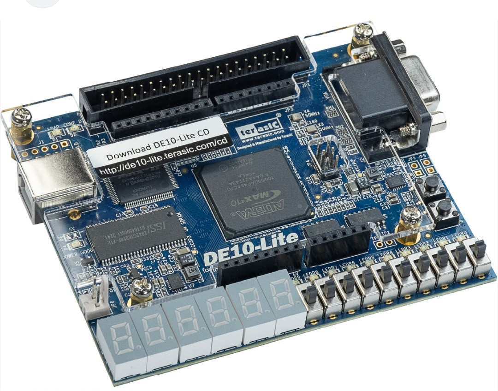

FPGA Mimarisi ve Bileşenleri
Kart üzerindeki bileşenleri incelemek için renkli butonlara tıklayın.

Intel MAX 10 FPGA Çipi
Kartın kalbidir. 50K mantıksal elemana (LE) sahip, dahili Flash bellek barındıran ve anında açılan (Instant-on) bir entegredir.
💡 Farklı bileşenler için görseldeki noktalara tıklayın.FPGA Ne İşe Yarar?
FPGA (Field Programmable Gate Array), üretim sonrasında donanımsal mimarisi ihtiyaçlara göre tekrar tekrar programlanabilen esnek bir entegre devredir. Geleneksel işlemciler gibi komutları sırayla çalıştırmak yerine, kodu doğrudan fiziksel donanım bağlantılarına dönüştürerek yüksek hızlı ve paralel bir çalışma imkanı sunar.
Nerede Kullanılır?
Yüksek hız, paralellik, düşük gecikme ve donanımın yazılım gibi davranması gereken kritik sistem çözümlerinde kullanılır. Savunma sanayi, havacılık, telekomünikasyon (5G altyapısı) ve otomotiv gibi alanlarda; sinyal işleme, görüntü işleme ve gerçek zamanlı veri akışlarını yönetmek için kullanılır.
Nasıl Geliştirilir?
Sistem gereksinimleri tamamlandıktan sonra FPGA geliştirme, Verilog veya VHDL gibi donanım tanımlama dilleri (HDL) ile mantıksal mimarinin koda dökülmesiyle başlar. Yazdığınız kod simülasyon adımlarından geçip sentezlenerek bit akış (bitstream) dosyası halinde karta yüklenir.